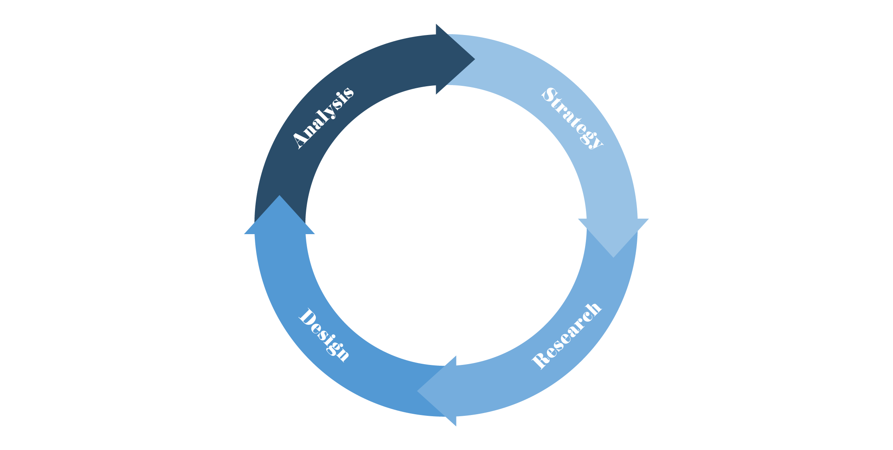

Philosophy
As a designer, my job isn’t just to empower users to reach their goals, but also to make them feel confident and a sense of authorship over the decisions they make while interacting with what I build. The experience doesn't just end here though, design needs to constantly evolve at the same rate a user does. It needs to ebb and flow while never forgetting its purpose; a designer’s job should never be done.
In my design cycle, I am most passionate about investigation and analysis. With my experience in a lab, I am always seeking numbers and data. Even though it’s the second step in my cycle, I try to inject it in every stage as a form of fact checking to pursue deeper understanding of our goals and build more empathy to the users.
Fluent
A design is not just pixels and a splash page, it is the shape of a pen, the sound in a theater, the seat of a chair; almost everything we interact with during our day is designed by somebody. That person could have lived at any time, spoken any language, and had any kind of personality. For this reason, design should strive to be fluent to all eyes. Good work stems from the human experience, it doesn't matter what a user’s background, language, or abilities are. Inclusivity isn’t just a part of design, it’s the soul of it.
Purposeful
Design exists as a service to people. A service can only be successful when its purpose is clean and concise. The purpose is rooted in reality and finding the purpose while you’re designing is the core of the work. Purpose is told directly from the user, either via quantitative or qualitative data. Although the purpose is the razor, it’s also as ever-evolving as the user who needs the service.
Less, but Better
Design is a digital conversation. Nobody likes having a conversation where one of you is talking and the other is screaming at the top of their lungs. Interacting with something is a personal experience and the service you’re providing should always complement and respect this. When design pinpoints its purpose, then the only things that should be added are features that complement.
With these beliefs in mind, I approach my practice in the follow ways:
- Strategy
- Research
- Design
- Analysis

Strategy
Alongside stakeholders, we begin with what we want to accomplish in the experience with our brand. Before we can start envisioning the users, we need to have a unified vision of who we are and what we want. We need to agree upon what our goals are, what success means to us, and how we want to track and measure this success.
Research
My personal favorite part of design, the investigation. At this point, we know who we are, it’s time to find out who the users are. I begin all projects with the widest funnel possible for discovery; this includes learnings from competitor research, human factors journals, and telemetry data. After this exploratory phase, we can narrow the funnel a bit with surveys and interviews. Creating a good foundation with our experiential and qualitative data, we move on to map the user’s journey through the experience and create personas to represent our core audiences.
Design
Using the personas, goals, and journey map, we have more than enough to begin visualizing the service. It starts in the sketchbook, going analog before going digital. I avoid relying too heavily on what service already exists in this phase, rather, I want to focus on the real human need behind the service. From this we can create the information architecture, the heart and sole of an experience. Once there are sketches and architecture in place, it’s time to digitize it using current design standards to check the vision. Prototyping now begins with rapid iteration stemming from cross-disciplinary collaboration. At this phase the designs get input from the stakeholders as well as small pockets of users. Using the metrics for success defined in our first step, we move forward with implementation.
Analysis
With the design translated to code, it’s time to push go and begin analytics. The question we need to ask here, “Are users reaching their goals? Did we define their needs correctly?” and the way we answer that is with our metric for success. Here we track the ever-evolving user goal, entering into the next lifecycle for this design.